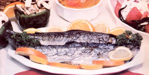

This elegant outdoor feast is downright delicious and a snap to prepare!
One of the nicest things about summer is the chance to get the family together-between bouts of gardening and putting up produce-for occasional picnics and cookouts. It's easy, however, when planning the menu for an outdoor dinner, to stick (by force of habit) with such familiar favorites as fried chicken, charcoal-broiled steak, deviled eggs, potato salad, and cole slaw. Now as popular as the old standards may be, it's often fun to surprise your relatives and friends with a few unexpected gourmet dishes . . . or even with a whole menu of "special" delectables.
When MOM's staff set off in search of a unique, delicious, and nutritious meal for a summer cookout, we turned to our old friend Deborah Dunn, of the Herb Garden Cafe in MOTHER's home base of Hendersonville, North Carolina. (See "Four Fantastic Vegetarian Sandwiches From the Herb Garden Cafe . . . With Love" in MOTHER NO. 52. )
And Deborah, with her usual flair, produced a mouthwatering feast that consists of baked trout, stuffed tomatoes, marinated mushrooms, and brandied peaches. Better still (considering how busy summer can be), it's a meal that-except for the fish, which is tastiest when caught fresh from a mountain stream-can be prepared in advance.
A RECIPE SCHEDULE
Start your woodland banquet for four, during the evening prior to the excursion, by mixing 1 pound of sliced fresh mushrooms, 2 teaspoons of tamari (soy sauce), 3 chopped cloves of garlic, 1/2 teaspoon of oregano, 2 tablespoons of minced fresh parsley, 1/4 cup of water, the juice of 2 lemons, 1/2 cup of olive oil, and 1/2 cup of safflower oil. Let the dish marinate in the refrigerator overnight.
The next day-a few hours prior to the cookoutslice up 6 fresh, ripe peaches and combine them with 1/2 cup of honey, 1/2 teaspoon of cinnamon, and 2 tablespoons of brandy. Refrigerate the dessert and let the various flavors mingle until you're ready to serve it.
When chowtime is approximately an hour away, fire up your charcoal grill. Now, wash 6 large tomatoes (to allow seconds for the hungriest diners) and place them in boiling water for 1 minute. Then drain them, drop the fruits into cold water, and carefully remove their skins. With that done, slice each tomato (keep the stem side up) into four wedges, cutting almost to-and not through-the bottom. Spread the sections slightly apart sprinkle the inner surfaces with a bit of salt . . . cover the tomatoes . . . and place them in a cooler.
For the filling, dice 1/2 of a cucumber, 1/2 of a green pepper, 2 stalks of celery, 3 scallions, and 1 bunch of fresh parsley. Then add 1/4 teaspoon of salt, 1/7 teaspoon of cayenne, 1 teaspoon of basil, 1/8 teaspoon of granulated garlic, and 2 cups of cottage cheese. When you're ready to eat, spoon the mixture into the tomato shells, and top them with black olives.
THE MAIN COURSE
By this time, Deborah assumes that you have caught ( or bought, if the fish aren't biting) 4 trout . . . each about 11 to 14 inches in length. Once the trout are cleaned, place four lemon wedges (or try orange wedges for a deliciously different flavor) in the cavity of each fish. Sprinkle the inside with fresh parsley and curry powder, season the trout-both inside and out-with salt and pepper, and coat them generously with butter.
Wrap the fish individually in heavy-duty aluminum foil and-once the charcoal fire has burned down-set them on the grill to cook for about 5 minutes on each side, or until the meat flakes easily Serve with more lemon wedges.
This fishbake-in-the-forest (or wherever you choose to enjoy it) is sure to turn a casual summer picnic into culinary event that you'll remember for long time to come.
|
 |
|
|